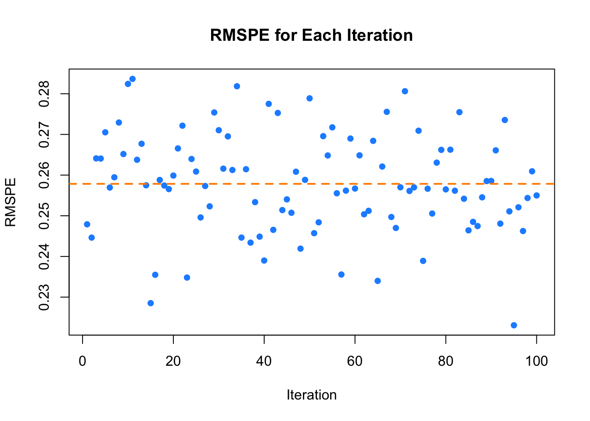
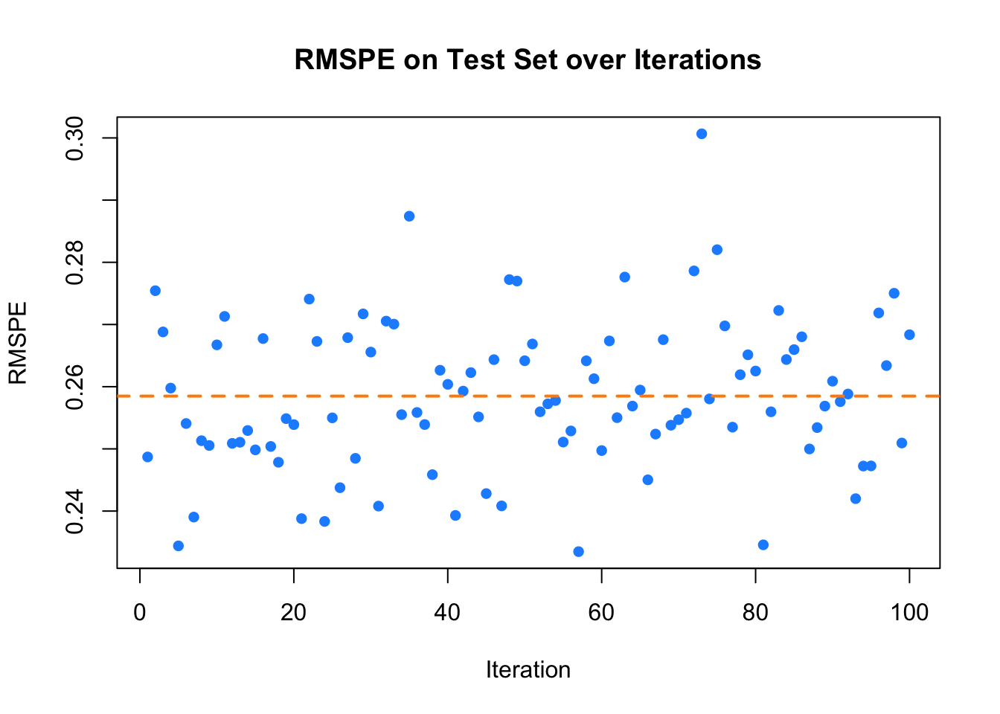

Chapter 9 Hyperparameter Tuning
Building on the concepts explored in the previous chapter, where we introduced kernel density estimation and kernel regression, we now turn our attention to one of the most critical aspects of predictive modeling: hyperparameter tuning. As we discussed, hyperparameters such as bandwidths in kernel methods play key role in controlling the trade-off between bias and variance, and overfitting, thus significantly impacting the performance of the model. In kernel density estimation, bandwidth selection determines the smoothness of the estimated probability density function, while in kernel regression, it controls the flexibility of the regression curve.
Hyperparameters are model parameters set prior to the training process. Why is it important to tune these hyperparameters? The optimal values of hyperparameters are typically unknown ahead of time, making it essential to explore different values. Essentially, a model with different hyperparameters can be considered a distinct model, potentially leading to variations in performance. Thus, tuning is crucial as it directly impacts the effectiveness and accuracy of the model.
In general, each prediction method involves multiple tuning parameters—known as hyperparameters—which must be set before the learning process begins. These are external to the model and cannot be directly estimated from the data. For example, the bandwidth \(h\) in kernel regression, the number of neighbors \(k\) in k-nearest neighbors (kNN), the number of hidden layers in neural networks, the degree of polynomials in polynomial regression, and the penalty parameter \(\lambda\) in Lasso regression are all hyperparameters that require tuning in advance. This contrasts with model parameters, which are internal to a parametric model and can be estimated from the data once the hyperparameters are specified.
To find optimal hyperparameters, several methods are employed. While brute force approaches like Grid Search and Randomized Grid Search are common, where hyperparameters are chosen randomly or systematically without considering previous outcomes, they can be inefficient for larger search spaces. Other methods like Bayesian Optimization and Genetic Algorithms, which will not be covered in this book, use informative criteria to guide the search for optimal hyperparameters. These methods follow a sequential process, leveraging past decisions to inform future choices, and are generally more efficient than brute force methods, particularly for expansive search spaces.
One of the most important tools for hyperparameter tuning is cross-validation, particularly a version called \(k\)-fold cross-validation. This technique helps us choose hyperparameters that result in a model that performs well not just on the data it was trained on, but also on new, unseen data. In simple terms, \(k\)-fold cross-validation works by dividing the dataset into \(k\) equally sized parts (or ‘folds’), using \(k-1\) of them to train the model and the remaining fold to test it. This process repeats \(k\) times, each time using a different fold for testing, and the results are averaged to estimate the model’s overall prediction accuracy. We’ll explain this process in more detail in later chapters. But the main idea is to answer a key question: how can we be confident that our estimated regression model will generalize beyond the sample data used to fit it? Ideally, we would test the model on a completely independent dataset—either by refitting the model to see if it gives similar results or by using it to predict outcomes and measuring the error, typically with mean squared prediction error. When such independent data aren’t available, cross-validation offers a reliable alternative for estimating predictive performance, helping us strike the right balance between model complexity and generalization.
In addition to cross-validation, hyperparameter tuning often involves grid search, a straightforward yet powerful method where a predefined grid of potential hyperparameter values is systematically evaluated to identify the combination that minimizes prediction error. Grid search involves defining a range of possible values for each hyperparameter and testing every possible combination of these values. The performance of each combination is assessed through cross-validation, and the best combination is chosen based on the highest average performance across the cross-validation folds. This chapter will explore the rules and applications of setting up grid searches and how to evaluate combinations of hyperparameters across different machine learning algorithms. As with cross-validation, grid search plays a vital role in optimizing hyperparameters, ensuring that the final model achieves the right balance between bias and variance, which is crucial for producing reliable predictions.
It is also essential to understand the role of different data subsets during model building. Typically, data is divided into three sets: the training set for building the model, the validation set for tuning hyperparameters and selecting the model, and the test set for evaluating the final generalization performance of the model. This process helps in developing models that perform well not just on training data but also on unseen data, which we will discuss in the next section.
Throughout this chapter, we will explore methods for data splitting, cross-validation, and grid search, all of which are key to successful model building.
9.1 Training, Validation, and Test Data Sets
In machine learning, one of the fundamental principles for building robust and generalizable models is the proper division of data into training, validation, and test sets. This process ensures that the model is not only fitted to known data but also evaluated on unseen data to assess its ability to generalize.
The training set is the portion of the dataset used to fit the model. It allows the model to learn patterns and relationships between the input features \(X\) and the target variable \(Y\). During training, the parameters of the model are optimized to minimize a specific objective function, such as mean squared error for regression or cross-entropy for classification. However, relying solely on the training set can lead to overfitting, where the model performs well on the training data but fails to generalize to new data. We showed in the overfitting chapter how overfitting can occur with high polynomial function, i.e. when the model is too complex, capturing noise in the training data rather than the underlying patterns.
The validation set plays a crucial role in hyperparameter tuning, particularly in selecting the best hyperparameters such as bandwidth, \(h\) in kernel regression, \(k\) in k-Nearest Neighbors, \(\lambda\) in Lasso. Unlike the training set, the validation set is not used to directly adjust model parameters; instead, it is used to evaluate the performance of the model during the training phase. This helps in selecting the best combination of hyperparameters to ensure that the model generalizes well. Key methods for tuning hyperparameters are cross-validation and bootstrapping.
In k-fold cross-validation, the dataset is split into \(k\) sections. In each iteration, one section is held out as the validation set, while the remaining sections serve as the training set. The model is trained on the training set, and its performance is evaluated on the validation set. This process is repeated \(k\) times, with each section being used as the validation set once. The aim of cross-validation is to minimize overfitting by ensuring that the model generalizes well to unseen data. Cross-validation is also often paired with grid search, where a predefined grid of possible hyperparameter values is evaluated to identify the combination that minimizes prediction error.
A typical hyperparameter tuning process could involve testing different values of a hyperparameter, like \(\lambda\) in ridge regression or bandwidth in kernel regression. For instance, we could establish a grid of potential \(\lambda\) values, split the data into \(k\) sections, and evaluate the performance of the model for each \(\lambda\) value. The model with the best performance across the validation sets is selected. This is crucial for preventing overfitting, as it allows the model to be evaluated on data it has not seen before.
The test set is used for the final evaluation of the predictive performance of the model after the training and validation phases. It serves as an unseen dataset that was not involved in model tuning, providing an unbiased estimate of how well the model is likely to perform in real-world applications. By evaluating the performance of the model on the test set, we can determine whether it has generalized beyond the training data. This step is essential because it ensures that the performance of the model is not overly optimistic and reflects its true predictive ability. Key performance metrics, such as RMSE for regression or accuracy for classification, are calculated on the test set.
It is crucial to avoid data leakage during this process, as this can lead to overly optimistic performance estimates. Data leakage occurs when information from the test or validation sets influences the training process. One common source of leakage is applying preprocessing steps (like normalization or feature scaling) before splitting the data. To avoid this, preprocessing should always be performed independently on the training data, with the parameters derived from training applied to the validation and test sets.
A common confusion in practice arises between the validation and test sets, as they are sometimes used interchangeably. However, they serve distinct purposes. The validation set is used during the model selection process to fine-tune the hyperparameters, while the test set is reserved for evaluating the final predictive accuracy of the model. After the model has been tuned using the validation set, it is crucial to assess its performance on the test set, which simulates how the model will perform on new, unseen data.
To summarize the typical process in machine learning:
Training data is used to build the model and estimate the parameters.
Validation data is used to tune the hyperparameters and avoid overfitting.
Test data is used to evaluate the final predictive performance of the model on unseen data.
This sequence ensures that the final model generalizes well to new data and is not simply overfitting to the training dataset. As the datasets grow in complexity and size, these methods become even more important to ensure robust model performance. Additionally, as we will see in the next sections, techniques like grid search and k-fold cross-validation help streamline the process of hyperparameter tuning, allowing us to optimize models more effectively.
Understanding the relationship between training, validation, and test data is foundational for modern machine learning. While the training set allows the model to learn, the validation set helps in fine-tuning, and the test set provides a final unbiased evaluation. In summary, the data-splitting process is fundamental to building and evaluating machine learning models. By dividing the data into training, validation, and test sets, we ensure that the model can learn, be optimized, and ultimately generalize to unseen data effectively. We will explore hyperparameter tuning in greater detail, including the processes of cross-validation and grid search, which help refine our models for better predictive performance, after discussing how to split data randomly.
9.2 Data Splitting
In fields like economics, social sciences, and health sciences, datasets are often limited due to the high cost of data collection. To address this, researchers commonly use data splitting and subsampling techniques to make the most of available data and to build models that can be reliably evaluated. These approaches allow for the creation of representative subsets, which support robust analysis and better estimates of model performance.
Data splitting is also a core practice in machine learning, where the goal is not only to explain relationships but also to predict accurately. Unlike traditional statistical models that often rely on the full dataset for estimation, machine learning models must be tested on data they haven’t seen during training to evaluate how well they generalize. For example, in a dataset on housing prices and their predictors, using the entire dataset for training might result in overfitting—where the model memorizes patterns in the training data, including noise, and performs poorly on new data.
To avoid overfitting and to ensure that model performance reflects true predictive power, the dataset is typically divided into three parts. The training set is used to fit the model, allowing it to learn patterns from the data. The validation set is used during the training process to tune hyperparameters and monitor for overfitting—helping to strike the right balance between model complexity and generalization. Finally, the test set is kept completely separate and is used only for the final evaluation, providing an unbiased estimate of how well the model will perform on new, unseen data. This structured approach ensures that performance metrics are not simply measuring the model’s ability to memorize the training data, but its ability to generalize to future cases.
To operationalize this process, several practical data splitting strategies are commonly used. These include:
Random Splitting (or Subsampling): Also called Monte Carlo cross-validation, this method involves randomly dividing the dataset into training and testing subsets. It’s often used repeatedly to assess model stability, especially with limited data.
K-Fold Cross-Validation: The data is split into \(k\) equal parts (folds). The model is trained \(k\) times, each time using a different fold as the test set and the rest for training. The results are averaged to estimate prediction accuracy. We will explain this technique in detail in later chapters.
Stratified Sampling: Used when dealing with imbalanced classes, this ensures each subset contains approximately the same proportion of each class as the full dataset.
Rolling Window Cross-Validation: Tailored for time-series data, this method uses sequential overlapping windows for training and testing, preserving the temporal order.
Blocked Cross-Validation: Also for time-series settings, it divides the dataset into blocks and performs training and testing on sequential blocks to prevent leakage across time.
Regardless of the specific technique used, maintaining the integrity of the test set throughout the modeling process is essential for valid performance evaluation. One of the most serious risks during data splitting is data leakage—when information from the test set, which should represent truly unseen data, inadvertently influences the training process. This undermines the integrity of model evaluation and can lead to overly optimistic performance metrics that don’t generalize in practice.
There are two main forms of data leakage. The first is train-test contamination, which arises when preprocessing steps—such as feature selection, scaling, or transformation—are applied to the entire dataset before splitting. This allows information from the test set to seep into the training set, violating the principle that the test data must remain unseen (i.e. untouched) during model development. The second form is target leakage, which occurs when the model is given access to information that would not realistically be available at the time of prediction. A classic example is using future housing prices to predict current ones, which gives the model an unfair advantage and leads to misleading results.
To prevent data leakage, it is essential to split the data into training, validation, and test sets before performing any preprocessing. All transformations—such as variable generation, normalization, or feature engineering—should be carried out using only the training data. The same transformations are then applied to the validation and test sets using parameters learned from the training set. This disciplined approach ensures that the evaluation of model performance remains honest and reflects how the model would perform on truly unseen data. Cross-validation must also be implemented carefully—ensuring that transformations and selections are confined within each fold—to avoid leakage across folds.
Some modeling contexts, like time-series analysis, present additional challenges for data splitting. Random splitting can break this order and lead to misleading results. Instead, use methods like rolling window or blocked cross-validation. Time-series data often involve autocorrelation—dependence between values across time. To address this, one can stratify by time intervals or apply techniques such as Fourier or wavelet transforms to reduce temporal dependence.
There is no universal rule for how to split a dataset; the ideal strategy depends on the size of the dataset and the specifics of the problem. However, some general guidelines are commonly followed in practice. For many applications, allocating between 60% and 80% of the data for training—including both the training and validation sets—is typical, while the remaining 20% to 40% is set aside for final testing. When working with smaller datasets, a more detailed split such as 70% for training, 20% for validation, and 10% for testing may be more appropriate to ensure each phase of model development is adequately supported.
While splitting strategies help allocate available data, another tool used for statistical inference—though conceptually different—is bootstrapping. It’s important to distinguish bootstrapping from data splitting. Bootstrapping is a resampling technique—not a splitting method. It involves repeatedly drawing samples with replacement from the dataset to create multiple resampled datasets, typically used to estimate uncertainty or variability in a statistic. Unlike data splitting, it doesn’t separate the data into training and testing subsets.
To summarize, proper data splitting must be paired with disciplined data preparation practices. Before modeling, always visualize your data to identify trends, outliers, and dependencies that may inform your splitting strategy. Split your data before performing any transformations. Apply the same preprocessing steps to the validation and test sets as used on the training data. Keep all data subsets strictly separate throughout the modeling process to ensure a fair and unbiased assessment of your model.
9.2.1 How can we split the data randomly?
We can use the sample() function in R to randomly shuffle data or create random subsets for various tasks, such as splitting a dataset into training and validation sets. It allows for sampling with or without replacement, with uneven probabilities, data frame rows, lists, and vectors. This function is particularly useful in data modeling when we need to divide datasets into different sections, like in cross-validation, ensuring that the process remains unbiased and representative of the entire dataset.
Let’s walk through an example where we randomly split a dataset into two equal parts—one for training and the other for validation. The dataset will be generated using a simple Data Generating Mechanism (DGM), where \(Y\) depends linearly on \(X\) with some added noise.
set.seed(1)
n <- 10000
X <- sort(runif(n) * 2 * pi)
# Create the response variable Y as sin(X) with added noise
Y <- sin(X) + rnorm(n)/4
data <- data.frame(Y, X)
random <- sample(n, n, replace = FALSE)
data <- data[random, ]
k <- 2 # Number of folds in cross-validation
# Divide the data into k equal folds
folds <- cut(seq(1, n), breaks = k, labels = FALSE)
for (i in 1:k) {
val_idx <- which(folds == i) # Indexes of validation data for the current fold
train_data <- data[-val_idx, ] # Training data (all except the current fold)
val_data <- data[val_idx, ] # Validation data (the current fold)
}We create a dataset then we shuffle the dataset using sample(). This randomizes the order of the data points. Next, the dataset is split into \(k\) approximately equal segments. The first half (\(i=1\)) is used for validation the model, and the second half is reserved for training.
In real-world applications, we often split the data differently. For example, a 90% for training -10% for validation split is common. You can achive that by changing the value of k to 10 and then using the all but \(i^{th}\) 9/10th of the data for training and the \(i^{th}\) 1/10th for validation.
For 5-fold or 10-fold cross-validation, which we will discuss next section, the data is divided into five or ten equal parts. In each iteration, one of these parts is designated as the validation set, while the other remaining parts are used as the training set. To modify the code for 5-fold cross-validation, you would need to divide the data into five segments and rotate through them as training and validation sets in each iteration.
How can we use splitting data randomly into two equal segments to evaluate the performance of a model?
We have prepared a dataset with a 50-50 split between training and validation sets using the first code snippet above (when \(k=2\)).
To tune the span hyperparameter in a kernel regression model, we use the loess() function. We fit multiple kernel regression models with different span values using the training set, then predict the target variable (Y) on the validation set for each model. Finally, we calculate the Root Mean Squared Prediction Error (RMSPE) for each model to assess its performance and determine the optimal span value.
# Train loess models with different spans on the training data
loe0 <- loess(Y ~ X, degree = 2, span = 0.02, data = train_data) # Overfitting
loe1 <- loess(Y ~ X, degree = 2, span = 0.1, data = train_data) # Moderate span
loe2 <- loess(Y ~ X, degree = 2, span = 1, data = train_data) # Underfitting
# Predict on the validation set
fit0 <- predict(loe0, val_data$X) # Predictions for small-span = 0.02
fit1 <- predict(loe1, val_data$X) # Predictions for moderate-span = 0.1
fit2 <- predict(loe2, val_data$X) # Predictions for large-span = 1We have trained three different kernel regression models using the loess() function with varying span values: a small span (0.02), a moderate span (0.1), and a large span (1). These spans control the smoothness of the regression curve, with smaller spans leading to more flexible models and larger spans leading to smoother curves.
To evaluate the performance of these models, we calculate the RMSPE on the validation set, which measures the average squared difference between the predicted and actual values. Let’s compute the RMSPEs for each model.
# Compute RMSPE (Root Mean Squared Prediction Error) for each model
rmspe0 <- sqrt(mean((val_data$Y - fit0)^2)) # RMSPE for span = 0.02
rmspe1 <- sqrt(mean((val_data$Y - fit1)^2)) # RMSPE for span = 0.1
rmspe2 <- sqrt(mean((val_data$Y - fit2)^2)) # RMSPE for span = 1
# Output the RMSPE values
c(paste("RMSPE with span = 0.02:", rmspe0),
paste("RMSPE with span = 0.1:", rmspe1),
paste("RMSPE with span = 1:", rmspe2))## [1] "RMSPE with span = 0.02: 0.253191865839389"
## [2] "RMSPE with span = 0.1: 0.250909577867399"
## [3] "RMSPE with span = 1: 0.316932583440793"The RMSPE is calculated as the square root of the average squared differences between the true values (val$Y) and the predicted values (fit0, fit1, fit2) for each span value. In this simulation, we tested three span values to fit the kernel regression models. The goal is to choose the span that minimizes RMSPE, indicating better predictive accuracy. The model with the lowest RMSPE offers the best performance.
However, our current approach has some limitations. We have used arbitrary span values, and the single random split may not accurately represent the generalization performance of the model. Additionally, comparing RMSPEs manually can be time-consuming and prone to error.
To address these limitations, we use grid search to systematically explore a wider range of span values and perform k-fold cross-validation to evaluate the model on multiple folds of the data. This will help us fine-tune the hyperparameter and ensure robustness of the model on unseen data.
Having discussed random data splitting, we now move on to k-fold cross-validation, a more structured and reliable method for evaluating models.
9.3 k-Fold Cross-Validation
One of the key challenges in building predictive models is ensuring that the model generalizes well to unseen data. A single random split between training and validation sets, as discussed in the previous section, can sometimes lead to unreliable estimates of model performance. This is because the performance of the model may vary depending on how the data is split. To address this issue, the process often begins with a full dataset that typically includes predictors (X) and the response (Y), which serves as the foundation for data splitting and model building.
The first step is dividing the dataset. A common approach is to allocate 60-80% of the full dataset to the training set, which is used to fit the models. The remaining 20-40% of the data is set aside as the validation set, which plays a crucial role in evaluating and fine-tuning model parameters. A better approach involves holding out a final test set, typically 20% of the full dataset, distinct from the training and validation sets, to provide an unbiased evaluation of the predictive performance of the final model. The training and validation sets should be split using 80% of the full dataset. This test set, often left untouched until the final stage, ensures that performance of the model is not influenced by prior tuning with the training and validation data.
Once the data is split, models are fitted to the training data, and their performance is assessed on the validation set using metrics such as RMSPE to compare predicted values against actual values. After selecting and tuning the best model based on validation performance, performance of the model is tested on the final test set, providing a more reliable measure of how well it can generalize to new, unseen data.
However, the aforementioned setup may be prone to variability in performance estimates due to the potential instability of a single data split, which can lead to overfitting or unreliable results. To mitigate this issue, a more robust technique called k-fold cross-validation is often employed. This method divides the training dataset into k equally sized folds, systematically training the model on k-1 folds while using the remaining fold for validation (never include final test data to this step). By repeating this process k times, each fold serves as a validation set once, and the final model performance is averaged across all iterations, offering a more reliable estimate of the true predictive power of the model. This approach not only helps in overcoming the variability inherent in a single random split but also ensures a more consistent evaluation of the ability of the model to generalize.
9.3.1 What is k-Fold Cross-Validation?
In k-fold cross-validation, the dataset (mostly, training data set) is split into \(k\) equally-sized (or almost equally-sized) subsets, or “folds.” The model is then trained on \(k-1\) folds and validated on the remaining fold. This process is repeated \(k\) times, each time using a different fold as the validation set and the remaining \(k-1\) folds as the training set. The final performance metric is the average of the performance across all \(k\) iterations. We want to remind you that the final test data should be split from the raw data at the very beginning, before any further processing, and should not be included in the subsequent steps.
The steps for k-fold cross-validation are as follows:
There are also alternative cross-validation methods such as , , and . These methods may be better suited to certain types of data and prediction tasks, which we will explore later.
9.3.2 Building a Simple k-Fold Cross-Validation Loop
Let’s start with a simple example to calculate the means of a random variable \(X\) in both training and validation sets using 10-fold cross-validation. This example introduces how to structure k-fold cross-validation in practice.
set.seed(1)
n <- 10000
X <- sort(runif(n) * 2 * pi)
Y <- sin(X) + rnorm(n)/4
data <- data.frame(Y, X)
random <- sample(n, n, replace = FALSE)
data <- data[random, ]
k <- 5 # Number of folds in cross-validation
folds <- cut(seq(1, n), breaks = k, labels = FALSE)
spans <- c(0.02, 0.1, 1) # Different span values for tuning
rmspe_matrix <- matrix(NA, nrow = k, ncol = length(spans))
for (i in 1:k) {
val_idx <- which(folds == i) # Indexes of validation data for the current fold
train_data <- data[-val_idx, ] # Training data (all except the current fold)
val_data <- data[val_idx, ] # Validation data (the current fold)
for (j in 1:length(spans)) {
loe_model <- loess(Y ~ X, degree = 2, span = spans[j], surface = "direct",
data = train_data)
fit <- predict(loe_model, val_data$X) # Predict using the current model
# Calculate RMSPE for the current fold and span
rmspe_matrix[i, j] <- sqrt(mean((val_data$Y - fit)^2, na.rm = TRUE))
}
}
# Prepare a data frame to store RMSPE values for each fold and span
rmspe_table <- data.frame(matrix(NA, nrow = k + 1, ncol = length(spans)))
colnames(rmspe_table) <- paste("Span =", spans) # Set column names
# Fill in the RMSPE values for each fold
for (j in 1:length(spans)) {
rmspe_table[1:k, j] <- rmspe_matrix[, j] # Fold-wise RMSPE values
}
# Add a row for the average RMSPE for each span across all folds
rmspe_table[k + 1, ] <- colMeans(rmspe_matrix, na.rm = TRUE)
rownames(rmspe_table) <- c(paste("Fold", 1:k), "Average")
# Print the RMSPE table
print(rmspe_table)## Span = 0.02 Span = 0.1 Span = 1
## Fold 1 0.2466543 0.2449180 0.3083954
## Fold 2 0.2453188 0.2430646 0.3056569
## Fold 3 0.2528307 0.2498545 0.3137374
## Fold 4 0.2554829 0.2536209 0.3195956
## Fold 5 0.2501773 0.2476371 0.3131323
## Average 0.2500928 0.2478190 0.3121035This k-fold cross-validation method helps us evaluate different hyperparameters across multiple training-validation splits. By averaging the performance metrics, we can select the best-performing hyperparameter (e.g., the optimal ) that generalizes well to unseen data.
9.4 Grid Search
One of the most common methods for hyperparameter tuning in machine learning models is grid search. This technique systematically explores a predefined set of hyperparameters by training the model on different combinations and selecting the one that yields the best performance. Often referred to as a parameter sweep, grid search involves an exhaustive search through a manually specified subset of the hyperparameter space of a given learning algorithm.
While grid search is considered one of the simplest optimization techniques, it remains powerful because it guarantees finding the most optimal solution by brute-forcing through all possible combinations of hyperparameters. It operates by creating a “grid” of potential parameter values and evaluating each combination to determine which set performs best. Each combination is tested, mostly using cross-validation, and the point on the grid that maximizes the average performance metric in cross-validation is selected as the optimal combination of hyperparameters. This exhaustive approach ensures that the best possible point within the hyperparameter space is identified. However, the main drawback of grid search is its inefficiency—it is slow because it requires evaluating every combination of parameters, which can be computationally expensive, especially when k-fold cross-validation is involved. For each point in the grid, the model must be trained and validated k times, making the process time-consuming and complex when dealing with large datasets or numerous hyperparameters.
Despite this, grid search remains a valuable method when the goal is to find the absolute best combination of hyperparameters. It guarantees that no possible combination is overlooked, making it ideal for scenarios where accuracy is the top priority and computational resources are available.
The algorithm follows a few key steps:
- Define hyperparameter grid, i.e. a range of values for each hyperparameter.
- Create a matrix of all possible combinations of these values.
- Each combination is then tested through an objective function that returns a score, ranking the combinations based on performance.
- In the context of machine learning, each combination is used to train and evaluate the model, with the results captured using performance metrics such as accuracy or mean squared error.
- After testing all possible combinations, the hyperparameters with the best performance is selected, and the model is retrained using this optimal set of hyperparameters for final predictions.
An alternative approach, which we will not discuss into in this book, is random search. Random search follows a similar concept but instead of evaluating every point on the grid, it tests a randomly selected subset of points. This makes random search faster and less computationally expensive, though potentially less accurate. The smaller the subset, the faster the search, but the likelihood of finding the optimal point decreases. Conversely, using a larger subset increases the accuracy of the search, bringing it closer to grid search in effectiveness. Random search is particularly useful when the hyperparameter space is large, and a fine-grained grid of values is impractical to explore exhaustively. While it may not find the absolute best combination, random search often identifies a good enough set of hyperparameters, making it a practical choice in situations where time and resources are limited.
In summary, grid search, though straightforward and computationally costly, is highly effective in hyperparameter tuning by ensuring that the best parameter combination is found, and it forms the foundation for fine-tuning machine learning models. We provide a simulation of this method below.
9.5 Simulation of Grid Search With Cross-Validation
In the previous example, we used three specific values for the hyperparameter in the function. While this was a simple demonstration, it highlights the key concept of grid search: evaluating different combinations of hyperparameters to find the one that minimizes prediction error. Additionally, hyperparameters like (which controls the degree of the polynomial used in ) were not included in our search, even though they could significantly impact the performance of the model.
Let’s now perform a simple grid search using the model with cross-validation. This will help us better understand the concept of tuning hyperparameters. In this example, we will search for the optimal combination of and . We will use the same program snippet as before, but with one change: we will modify the line to span <- seq(from = 0.02, to = 0.1, by = 0.02) to create a sequence of span values for tuning. As seen, the results for and are the same as in the previous example. You can modify the range by changing instead of to observe the same results as when . Alternatively, you can experiment with different span values to explore how they affect performance of the model.
## Span = 0.02 Span = 0.04 Span = 0.06 Span = 0.08 Span = 0.1
## Fold 1 0.2466543 0.2457323 0.2452745 0.2450727 0.2449180
## Fold 2 0.2453188 0.2441281 0.2435240 0.2431653 0.2430646
## Fold 3 0.2528307 0.2507143 0.2501278 0.2500375 0.2498545
## Fold 4 0.2554829 0.2542328 0.2539443 0.2537793 0.2536209
## Fold 5 0.2501773 0.2484649 0.2479637 0.2477718 0.2476371
## Average 0.2500928 0.2486545 0.2481668 0.2479653 0.2478190After demonstrating the basic concept of grid search with cross-validation, let’s simulate a more typical use case and further refine the approach in the final step. For our simulation, we generate a dataset and then split it into two parts: 80% for training data (used to fit the model and tune hyperparameters with cross-validation) and 20% for testing data (used to evaluate the performance of the final model). Once we have tuned the hyperparameters using cross-validation, it is essential to assess the performance of the model on the unseen test data. This ensures that the model generalizes well and has not overfit during the cross-validation process.
In this simulation, we introduce not only the span hyperparameter but also the degree hyperparameter for tuning. We continue using the loess model as our prediction model and employ 10-fold cross-validation to evaluate the performance of the model on multiple folds of the training data. Our objective is to find the optimal combination of span and degree values for the specified prediction function (i.e., perform hyperparameter tuning using cross-validated grid search) that minimizes the RMSPE on the test set.
# Data generation
set.seed(1)
n <- 1000
X <- sort(runif(n) * 2 * pi)
Y <- sin(X) + rnorm(n) / 4
data <- data.frame(x = X, y = Y)
set.seed(321) # Ensure reproducibility for the split
# Random shuffle data
random <- sample(n, n, replace = FALSE)
data <- data[random, ]
# Train - Test Split using cut command
indices <- cut(seq(1, n), breaks = c(0, 0.2 * n, n),
labels = c("Test", "Train"), include.lowest = TRUE)
testset <- data[indices == "Test", ] #20% of data set aside for testing
trainset <- data[indices == "Train", ] #80% of data for training
# Grid of parameters
grid <- expand.grid(seq(from = 0.01, to = 1, by = 0.02), c(1, 2))
colnames(grid) <- c("span", "degree")
# Setting up cross-validation
k <- 10 # Number of folds in cross-validation
folds <- cut(seq(1, nrow(trainset)), breaks = k, labels = FALSE)
# Prepare to store optimal settings and RMSPE values
OPT <- vector("list", k)
rmspe_matrix <- matrix(NA, nrow = k, ncol = length(grid))
# Cross-validation and model fitting
for (i in 1:k) {
val_idx <- which(folds == i) # Indexes of validation data for the current fold
train_data <- data[-val_idx, ] # Training data (all except the current fold)
val_data <- data[val_idx, ] # Validation data (the current fold)
# Vector to store RMSPE for each parameter set
RMSPE <- numeric(nrow(grid))
# Your prediction model; Loop through each parameter set in the grid
for (s in 1:nrow(grid)) {
model <- loess(
y ~ x,
control = loess.control(surface = "direct"),
data = train_data,
degree = grid$degree[s],
span = grid$span[s]
)
fit <- predict(model, val_data$x)
RMSPE[s] <- sqrt(mean((val_data$y - fit) ^ 2))
}
# Store the index of the best parameter set for this fold
OPT[[i]] <- which(RMSPE == min(RMSPE), arr.ind = TRUE)
}
# Compile the best settings for each fold
opgrid <- grid[unlist(OPT), ]
colnames(opgrid) <- c("span", "degree")
rownames(opgrid) <- paste("Fold", 1:k, sep=" ")
# Choose the optimal hyperparameters
# Calculate mean of spans and modal degree;
library(raster)
opt_degree <- modal(opgrid[, "degree"])
opt_span <- mean(opgrid[, "span"])
# Print results
print(opgrid)## span degree
## Fold 1 0.71 2
## Fold 2 0.61 2
## Fold 3 0.11 2
## Fold 4 0.03 1
## Fold 5 0.07 2
## Fold 6 0.25 1
## Fold 7 0.21 1
## Fold 8 0.59 2
## Fold 9 0.53 2
## Fold 10 0.11 2## [1] "Optimal mean span: 0.322"## [1] "Optimal modal degree: 2"We decided that the span will range between 0.01 and 1, increasing by 0.02, and the degree can be either 1 or 2. The grid of potential parameter values will include combinations such as (0.01, 1), (0.03, 1)…(1, 1), (0.01, 2), (0.03, 2)…(1, 2).
In the hyperparameter tuning process, using the training data (which is 80% of the original dataset, as 20% is reserved for the final test), the simulation will fit the model using the loess() function with each of these parameter combinations. The prediction function is applied one by one to fold-1 training data (90% of the training data, i.e., all but the first 10%). The model is then validated using fold-1 validation data (the first 10% of the training data). The combination of hyperparameters that minimizes the RMSPE for fold-1 is recorded.
This process is repeated for each fold, resulting in the best hyperparameters for each fold. Once all folds are processed, the optimal hyperparameters are determined by averaging the best span values across folds and finding the mode for the degree values.
Finally, the model, with these optimal hyperparameters, is evaluated using the final test data (the remaining 20% of the original dataset, which has been untouched up to this point).
# Use the test set for final evaluation
model <- loess(
y ~ x,
control = loess.control(surface = "direct"),
degree = opt_degree,
span = opt_span,
data = trainset
)
fit <- predict(model, testset$x)
RMSPE_test <- sqrt(mean((testset$y - fit) ^ 2))
# Output the RMSPE on the test set
print(paste("RMSPE on Test Set:", RMSPE_test))## [1] "RMSPE on Test Set: 0.260009376550889"To further ensure the stability of the performance of our model, we can repeat the process of splitting the data into training and test sets multiple times. This approach helps account for any variability in performance due to the random train-test split and provides more reliable estimates of the generalization performance of the model. It is recommended as a best practice to evaluate the model on the test set multiple times, which allows for a more robust estimate of its ability to generalize. By repeating the evaluation, we can calculate the average performance and assess the variance in the performance of the model across different splits of the data. This method offers a more comprehensive understanding of the predictive power of the model and stability by repeatedly testing it 100 times.
# Initial settings and data preparation
set.seed(1)
n <- 1000
X <- sort(runif(n) * 2 * pi)
Y <- sin(X) + rnorm(n) / 4
data <- data.frame(x = X, y = Y)
# Grid of parameters
grid <- expand.grid(seq(from = 0.01, to = 1, by = 0.02), c(1, 2))
colnames(grid) <- c("span", "degree")
t = 100 # number of times we loop
RMSPE_test <- c() # container for 100 RMSPE's
for (l in 1:t) {
set.seed(321+l) # Ensure reproducibility for the split
# Random shuffle data
random <- sample(n, n, replace = FALSE)
data <- data[random, ]
# Train - Test Split using cut command
indices <- cut(seq(1, n), breaks = c(0, 0.2 * n, n),
labels = c("Test", "Train"), include.lowest = TRUE)
testset <- data[indices == "Test", ] #20% of data set aside for testing
trainset <- data[indices == "Train", ] #80% of data for training
# Setting up cross-validation
k <- 10 # Number of folds in cross-validation
folds <- cut(seq(1, nrow(trainset)), breaks = k, labels = FALSE)
# Prepare to store optimal settings and RMSPE values
OPT <- vector("list", k)
rmspe_matrix <- matrix(NA, nrow = k, ncol = length(grid))
# Cross-validation and model fitting
for (i in 1:k) {
val_idx <- which(folds == i) # Indexes of validation data for the current fold
train_data <- data[-val_idx, ] # Training data (all except the current fold)
val_data <- data[val_idx, ] # Validation data (the current fold)
# Vector to store RMSPE for each parameter set
RMSPE <- numeric(nrow(grid))
# Loop through each parameter set in the grid
for (s in 1:nrow(grid)) {
model <- loess(
y ~ x,
control = loess.control(surface = "direct"),
data = train_data,
degree = grid$degree[s],
span = grid$span[s]
)
fit <- predict(model, val_data$x)
RMSPE[s] <- sqrt(mean((val_data$y - fit) ^ 2))
}
# Store the index of the best parameter set for this fold
OPT[[i]] <- which(RMSPE == min(RMSPE), arr.ind = TRUE)
}
# Compile the best settings for each fold
opgrid <- grid[unlist(OPT), ]
colnames(opgrid) <- c("span", "degree")
rownames(opgrid) <- paste("Fold", 1:k, sep=" ")
# Calculate mean of spans and modal degree
library(raster)
opt_degree <- modal(opgrid[, "degree"])
opt_span <- mean(opgrid[, "span"])
# **** Using the test set for final evaluation ****
model <- loess(
y ~ x,
control = loess.control(surface = "direct"),
degree = opt_degree,
span = opt_span,
data = trainset
)
fit <- predict(model, testset$x)
RMSPE_test[l] <- sqrt(mean((testset$y - fit) ^ 2))
}
mean(RMSPE_test)## [1] 0.2578508## [1] 0.0001485687The model is built using a grid search over a range of values for the span and degree hyperparameters of a LOESS model, with cross-validation applied to optimize these hyperparameters, and evaluate it using test data. This process is identical to what was explained in detail earlier. By systematically looping through 100 iterations, we shuffle the initial data and split it into training and test sets. The training set (80% of the data) is used for model fitting and hyperparamer tuning, while the test set (20% of the data) is reserved for final evaluation, which remains untouched until each iteration’s end.
By repeating the test set evaluation 100 times, this simulation evaluates not only the average performance (measured by the mean of the 100 RMSPEs) but also the variance of these RMSPEs obtained from different random splits of the data. The plot displays the RMSPE for each iteration, with the black line representing the average RMSPE across all iterations, offering a clear visual assessment of the performance and stability of the model .

FIGURE 9.1: RMSPE for Each Iteration
Moreover, this repetition for robust evaluation is particularly useful when comparing different prediction functions for the dataset using the same evaluation criteria. For continuous outcomes, this typically involves employing various regression-based prediction functions. It is common practice to compare models by evaluating their Root Mean Squared Prediction Errors (RMSPEs) and selecting the one that delivers the best performance. This approach ensures a fair comparison and increases confidence in the robustness and reliability of the chosen model. The final results, which include both the average RMSPE and its variance, provide a comprehensive reflection of the overall performance of the model. This allows for a more stable and accurate estimate of the ability of the model to generalize to new, unseen data, ultimately ensuring the selection of the most reliable prediction function.
In this section, we introduced grid search and cross-validated grid search as essential techniques for hyperparameter tuning. Grid search systematically evaluates hyperparameter combinations, while cross-validation ensures robust model performance by reducing the risk of overfitting and accounting for variability in training data. Additionally, we highlighted the importance of testing on a separate test set and repeating the process to obtain stable performance estimates.
Most machine learning workflows do not require manually implementing hyperparameter tuning with cross-validated grid search, as demonstrated in the previous simulation. While building such a program helps to understand the process step by step, most practitioners rely on established R packages that streamline and automate this task. If you prefer, you can write similar programs yourself to explore the process, but using ready-made packages is often more easier. Here is a brief overview of some of the most commonly used R packages for hyperparameter tuning and cross-validated grid search.
caret is a popular package that simplifies the model training process by providing tools for data splitting, pre-processing, feature selection, and model tuning, including grid search with cross-validation, across a wide variety of algorithms. Another flexible package, mlr3, supports a broad range of machine learning models and provides automated hyperparameter tuning through grid search and cross-validation. For users familiar with the tidyverse, tidymodels offers a consistent framework for modeling and includes functions like tune_grid() to perform grid search with cross-validation. Other specialized packages include xgboost, which has built-in cross-validation for gradient boosting models and particularly popular for tree-based models, and e1071, often used for tuning Support Vector Machines. Finally, packages like glmnet and randomForest are commonly used for penalized regression and random forests, respectively, with easy integration into caret for grid search and cross-validation. These packages help automate hyperparameter tuning and model evaluation, making them indispensable tools in machine learning workflows.
Now, let’s explore another common hyperparameter tuning method: bootstrapped grid search.
In machine learning and statistical modeling, hyperparameter tuning is a critical step that significantly affects model performance. Grid search is a common method for systematically exploring predefined hyperparameter values. However, traditional grid search may not fully capture the variability inherent in data, particularly when datasets are small or imbalanced. While grid search and cross-validated grid search are widely used, another powerful method for improving the robustness of hyperparameter selection is bootstrapped grid search.
Bootstrapped Grid Search combines grid search with bootstrap resampling techniques to create a more robust hyperparameter tuning process. Bootstrapping, a resampling technique where a dataset is sampled with replacement to create multiple new datasets (called bootstrap samples), allows us to estimate the variability of model performance across different hyperparameter settings. This leads to more generalizable models. In bootstrapped grid search, multiple versions of the training dataset are generated through resampling, and grid search is applied to each bootstrap sample. The performance of each hyperparameter combination is evaluated, and the results are aggregated across all samples. By selecting hyperparameters based on the overall performance, this method ensures that the chosen parameters are not overly influenced by the specific characteristics of a single dataset, providing a more stable and generalizable solution.
Bootstrapped grid search offers several advantages over traditional grid search. One key benefit is increased robustness: by averaging results over multiple resampled datasets, bootstrapped grid search provides a more reliable estimate of model performance and reduces the likelihood of overfitting to any one sample. This is especially important when working with smaller or with high variance. Another advantage is better handling of small datasets. Bootstrapping allows the creation of multiple training sets from the original dataset without losing valuable data. This is critical when data is scarce and we want to make the most out of every observation while still being able to perform model tuning and evaluation. Additionally, the process reduces variance in hyperparameter selection. Aggregating performance across multiple bootstrap samples leads to more stable and reliable hyperparameters, which can help improve the generalization ability of the model. This makes bootstrapped grid search a more dependable choice compared to methods that might overfit or select hyperparameters based on a single sample or validation set.
Bootstrapped grid search also provides confidence intervals for performance metrics, offering estimates of uncertainty in model evaluation. By reducing the risk of overfitting to a particular train-test split, bootstrapped grid search helps models generalize better to unseen data, making it a powerful technique for hyperparameter tuning, especially in cases where the dataset is small, has high variance, or imbalanced.
The bootstrapped grid search process can be broken down into the following steps:
- Define Hyperparameter Grid: Determine the hyperparameters to tune and their respective ranges.
- Generate bootstrap samples: Create \(B\) bootstrap samples from the original dataset by sampling with replacement.
- Perform grid search: For each bootstrap sample, apply grid search to tune the hyperparameters of the model (train and validate the model).
- Aggregate results: Aggregate the performance metrics from all bootstrap samples, and select the hyperparameters that perform best on average.
- Evaluate on the test set: Finally, evaluate the model with the selected hyperparameters on a held-out test set.
Here are the typical steps involved in implementing a bootstrapped grid search. First, generate bootstrap samples and choose the number of bootstrap iterations, typically ranging from 50 to 200. Next, select appropriate performance metrics based on the problem (e.g., RMSPE for regression, accuracy, or ROC-AUC for classification). Apply grid search within each bootstrap sample to find the optimal hyperparameters. Finally, train the model using the selected hyperparameters on the test set and evaluate its performance.
This specific simulation provides a comprehensive evaluation of a predictive model by repeatedly testing it 100 times. The model is built using a grid search over a range of values for the span and degree hyperparameters of a loess() model, with bootstrap sampling applied to optimize these hyperparameters, and finally evaluated using test data. We define the span to range between 0.01 and 1, increasing by 0.02, and the degree to be either 1 or 2.
In the hyperparameter tuning process, using the training data (which is 80% of the original dataset, with 20% reserved for the final test), the simulation will fit the model using the loess() function for each of these hyperparameter combinations. For each hyperparameter combination, we perform bootstrap resampling within the training data. Instead of dividing the training data into folds, we repeatedly sample with replacement to create bootstrap samples. The observations not included in the bootstrap sample form the out-of-bag (OOB) validation set. The model is trained on the bootstrap sample and evaluated on the OOB data, with the RMSPE recorded for each bootstrap iteration.
This process is repeated for 50 bootstrap samples per hyperparameter combination. The combination of hyperparameters that minimizes the average RMSPE across the 50 bootstrap samples is recorded. This procedure accounts for the variability in the training data and provides a more robust estimate of model performance compared to a single train-test split. Once all hyperparameter combinations have been evaluated through bootstrapping, the optimal hyperparameters are determined by selecting the combination with the lowest average RMSPE.
Finally, the model, with these optimal hyperparameters, is retrained using the entire training set and then evaluated using the final test data (the 20% of the original dataset set aside at the beginning). The test set RMSPE is calculated and stored for each iteration.
By systematically looping through 100 iterations, we shuffle the data each time and split it into training and test sets. The training set (80% of the data) is used for bootstrapped hyperparameter tuning, while the test set (20% of the data) remains untouched until the final evaluation step in each iteration. This repeated evaluation provides insights into the stability and generalization performance of the model over different random splits of the data.
# Simulating the data
n <- 1000
set.seed(1)
x <- sort(runif(n) * 2 * pi)
y <- sin(x) + rnorm(n) / 4
data <- data.frame(y = y, x = x)
# Hyperparameter grid
span_values <- seq(from = 0.01, to = 1, by = 0.02)
degree_values <- c(1, 2)
grid <- expand.grid(span = span_values, degree = degree_values)
t <- 100 # Number of repetitions
RMSPE_test <- numeric(t) # Container for test RMSPEs
for (l in 1:t) {
# Training-test split (80% training, 20% testing)
set.seed(321 + l)
test_indices <- sample(nrow(data), size = 0.2 * nrow(data), replace = FALSE)
testset <- data[test_indices, ]
trainset <- data[-test_indices, ]
OPT <- numeric(nrow(grid)) # Container for validation RMSPEs
# Hyperparameter grid loop
for (s in 1:nrow(grid)) {
B <- 10 # Number of bootstrap samples
RMSPE_bootstrap <- numeric(B) # Container for RMSPEs across bootstrap samples
# Bootstrap sampling loop
for (i in 1:B) {
# Bootstrap sample from training data
set.seed(1234 + i)
boot_indices <- sample(nrow(trainset), size = nrow(trainset), replace = TRUE)
bootstrap_data <- trainset[boot_indices, ]
# Validation/Out-of-bag (OOB) data
oob_indices <- setdiff(1:nrow(trainset), unique(boot_indices))
validation_data <- trainset[oob_indices, ]
# Check if OOB data is available
if (nrow(validation_data) > 0) {
# Fit model on bootstrap sample with current hyperparameters
model <- loess(
y ~ x,
data = bootstrap_data,
degree = grid$degree[s],
span = grid$span[s],
control = loess.control(surface = "direct")
)
# Predict on validation data
predictions <- predict(model, newdata = validation_data$x)
# Compute RMSPE for current bootstrap sample
RMSPE_bootstrap[i] <- sqrt(mean((validation_data$y - predictions) ^ 2))
} else {
# If no OOB data, assign NA
RMSPE_bootstrap[i] <- NA
}
}
# Average validation RMSPE for current hyperparameter combination
OPT[s] <- mean(RMSPE_bootstrap, na.rm = TRUE)
}
# Select hyperparameters with lowest average validation RMSPE
best_index <- which.min(OPT)
best_span <- grid$span[best_index]
best_degree <- grid$degree[best_index]
# Train model on entire training set with best hyperparameters
best_model <- loess(
y ~ x,
data = trainset,
degree = best_degree,
span = best_span,
control = loess.control(surface = "direct")
)
# Predict on test set
test_predictions <- predict(best_model, newdata = testset$x)
# Compute RMSPE on test set
RMSPE_test[l] <- sqrt(mean((testset$y - test_predictions) ^ 2))
}
# Calculate mean and variance of test RMSPEs
mean_RMSPE_test <- mean(RMSPE_test)
var_RMSPE_test <- var(RMSPE_test)
# Output mean and variance
cat("Mean RMSPE on test set:", mean_RMSPE_test, "\n")## Mean RMSPE on test set: 0.2584881## Variance of RMSPE on test set: 0.0001447856The plot displays the RMSPE for each iteration, with the black line representing the average RMSPE across all iterations, offering a clear visual assessment of the performance and stability of the model.
# Plot RMSPE_test over iterations with color
plot(RMSPE_test, col = "dodgerblue", pch = 16,
xlab = "Iteration", ylab = "RMSPE",
main = "RMSPE on Test Set over Iterations")
abline(h = mean_RMSPE_test, col = "darkorange", lwd = 2, lty = 2)
FIGURE 9.2: RMSPE on Test Set over Iterations
There are several alternatives and extensions to bootstrapped grid search that can improve both efficiency and effectiveness. One option is cross-validation can be applied after bootstrapped grid search, where bootstrapping is used for hyperparameter tuning, and cross-validation is employed afterward for model evaluation to test data, offering a more comprehensive assessment of model performance across different data splits. Another option is randomized search with bootstrapping, which randomly samples hyperparameter combinations instead of exhaustively searching the entire grid, reducing computational cost. Additional alternative method is Bayesian optimization, which uses probabilistic models to guide the hyperparameter search and can incorporate bootstrap estimates to refine the search process.
Practitioners should consider the trade-offs involved in bootstrapped grid search and can leverage computational strategies like parallel processing to mitigate runtime concerns. This method is a valuable tool for hyperparameter tuning, also helps reduce the risks of overfitting and high variance, making it particularly useful in small-sample or imbalance datasets. While it introduces additional computational demands, the benefits in terms of reliability and performance often outweigh the costs.
The same packages used for cross-validation grid search can also be applied to bootstrapped grid search. caret, mlr3, and tidymodels all support both cross-validation and bootstrapping for hyperparameter tuning. Packages like xgboost and e1071 remain useful for tuning models such as gradient boosting and Support Vector Machines. Additionally, glmnet and randomForest can easily integrate with caret for bootstrapped grid search. For improved efficiency, doParallel can be employed to parallelize the process, reducing runtime.